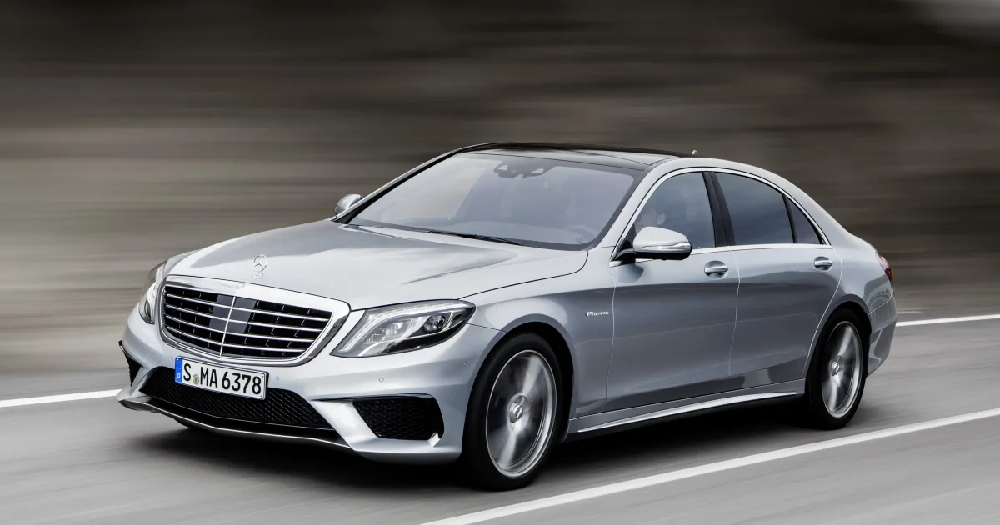
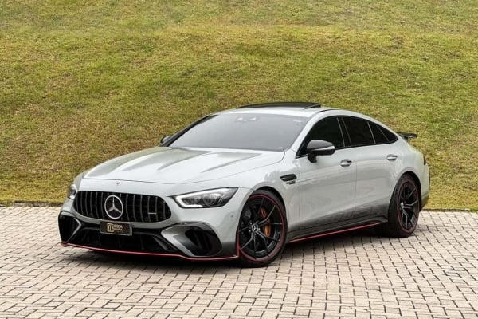

Nossos Veículos
A Mercedes-Benz oferece uma variedade de veículos que combinam luxo e desempenho.
A Mercedes-Benz oferece uma variedade de veículos que combinam luxo e desempenho.
Motorização: 4.0 V8 biturbo
Potência: Aproximadamente 469 cv (C63) ou 503 cv (C63 S)
Torque: Até 700 Nm
Transmissão: Automática de 9 marchas (9G-Tronic)
Aceleração (0 a 100 km/h): Cerca de 3,9 segundos (C63 S)
Motorização: 4.0 V8 biturbo
Potência: Aproximadamente 603 cv
Torque: Até 900 Nm
Transmissão: Automática de 9 marchas (9G-Tronic)
Aceleração (0 a 100 km/h): Cerca de 3,5 segundos
Motorização: 4.0 V8 biturbo
Potência: Aproximadamente 577 cv (GT63) ou até 630 cv (GT63 S)
Torque: Até 900 Nm
Transmissão: Automática de 9 marchas (AMG SPEEDSHIFT)
Aceleração (0 a 100 km/h): Cerca de 3,2 segundos (GT63 S)